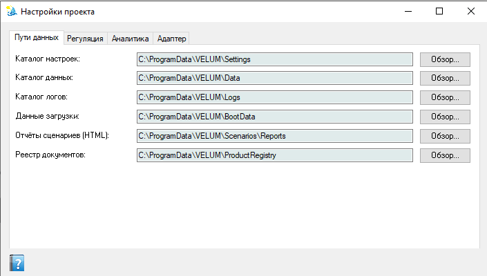
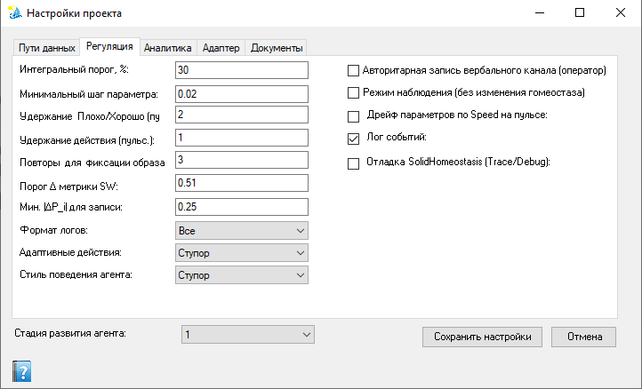
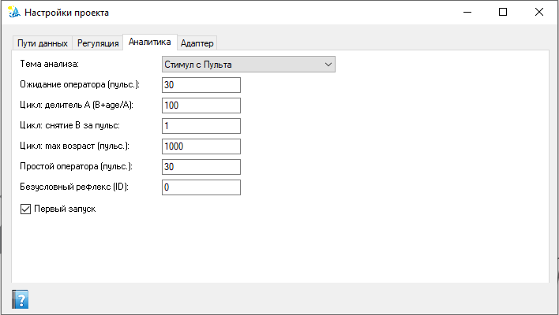
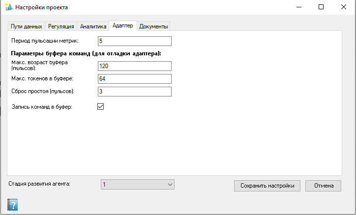
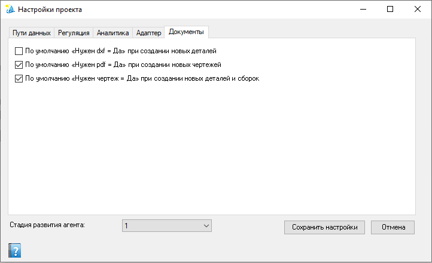

Настройки проекта
Пути данных Velum и дополнительные параметры помощника. Для начала работы обычно достаточно вкладки «Пути данных»; остальные вкладки оставляйте по умолчанию.
Как открыть
- Лента Velum → Настройки (только уровень
admin). - Панель «Агент» → значок настроек.
ProductRegistryAccessLevel (admin/user) задаётся в %ProgramData%\VELUM\Settings\Settings.xml. Сама форма настроек пользователю уровня user недоступна — смену уровня выполняет администратор, правя XML или работая под admin.
Что трогать, а что нет
| Вкладка | Рекомендация |
|---|---|
| Пути данных | Имеет смысл, если меняете каталог реестра, отчётов, логов. Проверьте, что папки существуют и доступны для записи. |
| Регуляция | Обычно не трогать. Нужна, если включаете режим «только наблюдение» или меняете приоритет ваших сообщений. |
| Аналитика | Обычно не трогать. Блок уровня обучения помощника — только осознанно (см. ниже). |
| Адаптер | Обычно не трогать. Параметры буфера команд SOLIDWORKS → помощник; на форме есть подсказки. |
| Документы | Дефолтные значения свойств «Нужен dxf», «Нужен pdf» и «Нужен чертеж» для новых деталей, сборок и чертежей. |
Вкладки подробнее
Пути данных
Каталоги и файлы данных Velum. Каждое поле — путь с кнопкой Обзор…:
- Реестр документов: — хранилище реестра документов (JSON, см. Реестр документов);
- Каталог обмена с 1С: — каталог CSV-обмена BOM (см. Экспорт BOM в 1С);
- Отчёты сценариев (HTML): — сохраняемые HTML-отчёты;
- Данные загрузки: — снапшоты состояния для восстановления после перезапуска;
- Каталог логов: — файлы журналов событий;
- Каталог данных: — каталог данных гомеостаза, основное хранилище параметров и состояний агента (профиль ядра ISIDA для SOLIDWORKS);
- Каталог настроек: — файл настроек Settings.xml.
Профиль Velum живёт в своём дереве %ProgramData%\VELUM и не смешивается с другими оболочками того же ядра.

Вкладка Пути данных: типичные каталоги под C:\ProgramData\VELUM\ (Settings, Data, Logs, BootData, отчёты сценариев, реестр документов, обмен с 1С).
Регуляция
Флажки:
- Авторитарная запись вербального канала (оператор) — ваши сообщения и команды сразу попадают в дерево решений (иначе проходят «песочницу» с интегральным порогом распознавания).
- Режим наблюдения (без изменения гомеостаза) — помощник собирает сводку, но воздействия с пульта не меняют его параметры; автоматизмы и рефлексы исполняются. Если «нажал пункт прямого воздействия — ничего не происходит», проверьте этот флажок.
- Лог событий — включить запись журнала событий.
- Отладка SolidHomeostasis (Trace/Debug) — расширенные отладочные логи адаптера (трассировка индексации реестра, диагностика SolidWorks). Обычно нужно только при разборе проблем по запросу поддержки.
- Дрейф параметров по Speed на пульсе — дрейф параметров гомеостаза по Speed на каждом пульсе.
Выпадающие списки:
- Формат логов: — формат файлов журнала: Нет / JSON / CSV / Все.
- Адаптивные действия: — адаптивное действие по умолчанию из списка, заданного в данных системы.
- Стиль поведения агента: — стиль поведения по умолчанию из стилей гомеостаза.
Числовые пороги (тонкая настройка, без необходимости не меняйте):
- Интегральный порог, % — минимальный процент совпадения для фиксации образа;
- Минимальный шаг параметра — минимальное изменение параметра, которое считается значимым;
- Удержание Плохо/Хорошо (пульс.) — как долго сохраняется оценка состояния;
- Удержание действия (пульс.) — как долго исполняется выбранный рефлекс;
- Повторы для фиксации образа — сколько пульсов нужно для распознавания;
- Мин. |ΔP_i| для записи и Порог Δ метрики SW — минимальные изменения параметра/метрики SOLIDWORKS, при которых событие записывается.

Вкладка Регуляция: слева — формат логов, числовые пороги и удержания, стиль поведения; справа — флажки «Авторитарная запись вербального канала», «Режим наблюдения», лог событий, отладка и дрейф параметров.
Аналитика
- Первый запуск — режим инициализации помощника (сброс накопленного при следующем старте цикла).
- Безусловный рефлекс (ID) — рефлекс, выполняемый по умолчанию при отсутствии других.
- Простой оператора (пульс.) — время без стимулов от оператора перед переходом в режим ожидания.
- Ожидание оператора (пульс.) — период ожидания действий оператора.
- Цикл: max возраст (пульс.) — после этого возраста главный цикл сбрасывается.
- Цикл: снятие B за пульс и Цикл: делитель A (B+age/A) — параметры формулы затухания веса основного цикла.
- Тема анализа: — визуальная тема интерфейса анализа данных.

Вкладка Аналитика: флажок «Первый запуск», ID безусловного рефлекса, пороги простоя/ожидания оператора, параметры цикла и тема анализа.
Адаптер
- Период пульсации метрик: — период фонового сканирования «тяжёлых» метрик SolidWorks (в пульсах, по умолчанию 5). Чем больше значение, тем реже обновляются метрики целостности реестра и тем меньше нагрузка на дисковую подсистему. Настройка не накручивается автоматически: если проход не успевает за один тик, он продолжается в следующие тики с места прерывания, а периодичность остаётся как задано. Подробнее — Проблемы реестра документов.
- Запись команд в буфер — писать команды SOLIDWORKS (
sw:*) в буфер для разбора адаптером. - Макс. возраст буфера — после превышения команда удаляется из буфера.
- Макс. токенов в буфере — ограничение на размер буфера команд.
- Сброс простоя — по истечении паузы буфер принудительно отправляется в ISIDA.
Меняйте, если буфер переполняется или команды запаздывают — иначе оставьте как есть. Подсказки на форме поясняют каждый параметр. Адаптер рассчитан на SOLIDWORKS 2019.

Вкладка Адаптер: период пульсации метрик, флажок записи команд sw:* в буфер, лимиты буфера (возраст, токены) и сброс простоя перед отправкой в ISIDA.
Документы
Задает дефолтные значения пользовательских свойств, которые автоматически создаются в новых документах SOLIDWORKS:
- «Нужен dxf = Да» при создании новых деталей — если включено, в каждой новой детали будет создано логическое свойство
Нужен dxf = Yes. По умолчанию выключено (свойство не создается, и в сканерах DXF деталь помечается как «не требующая экспорта»). - «Нужен pdf = Да» при создании новых чертежей — если включено, в каждом новом чертеже будет создано логическое свойство
Нужен pdf = Yes. По умолчанию включено. - «Нужен чертеж = Да» при создании новых деталей и сборок — если включено, в каждой новой детали и сборке будет создано логическое свойство
Нужен чертеж = Yes. По умолчанию включено.
Коды зрительного канала по типу активного документа. Помощник различает, что сейчас активно — деталь, сборка или чертёж, — и подмешивает в стимул код «цвета сцены» (зрительный канал образа восприятия ISIDA). Это позволяет условным рефлексам различать контекст типа документа: рефлекс, выученный, например, на «Сохранить» активном чертеже, не будет пытаться запустить «Экспорт PDF» при нажатии «Сохранить» на детали.
- Деталь (код цвета): — код зрительного канала при активном документе «деталь» (по умолчанию
1). - Сборка (код цвета): — код при активном документе «сборка» (по умолчанию
2). - Чертёж (код цвета): — код при активном документе «чертёж» (по умолчанию
3).
0…8 (0 — белый, 1 — чёрный, далее семь спектральных оттенков). Значение 0 означает «контекст по типу документа не ограничен» — такой стимул не различает тип документа. Разные ненулевые коды для разных типов дают разные пусковые образы, поэтому условные рефлексы, выученные до включения этой настройки (с белым кодом), продолжают срабатывать на любом типе — при необходимости переразмечайте их в AIStudio, подбирая нужный код цвета.

Вкладка Документы: три флажка значений по умолчанию свойств новых документов — «Нужен чертеж» (детали и сборки), «Нужен pdf» (чертежи) и «Нужен dxf» (детали); ниже — коды зрительного канала для активного документа «деталь / сборка / чертёж».
Стадия развития агента (внизу окна)
Под вкладками расположен выпадающий список Стадия развития агента: — режим, насколько «опыт» помощника уже накоплен и как он обрабатывает новые ситуации. В повседневной работе оставляйте значение по умолчанию. Смена стадии может сбросить связанные накопленные данные (при переключении появляется предупреждение «Сброс данных при смене стадии…»); во время пульсации цикла смена стадии недоступна. Делайте это только если понимаете последствия.
Сохранение
Сохранить настройки записывает конфигурацию (возможен перезапуск цикла помощника). Отмена закрывает окно без записи.
См. также
- Панель «Агент» — в том числе «почему действие не сработало»
- ISIDA и МВАП
- Лента команд